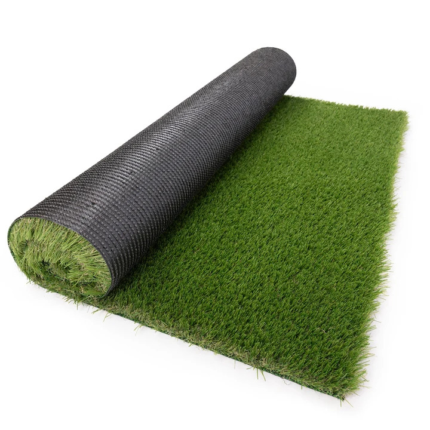

Césped artificial

Superficie de fibras sintéticas que imita el aspecto del césped natural. Puede instalarse en patios, balcones y zonas recreativas, siempre que se prepare una base apropiada y se permita el drenaje.